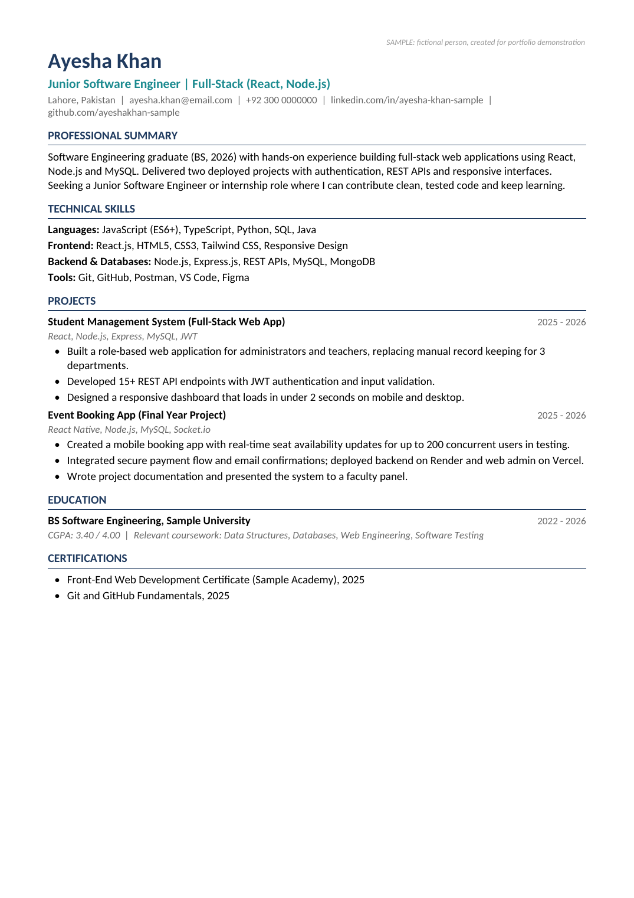
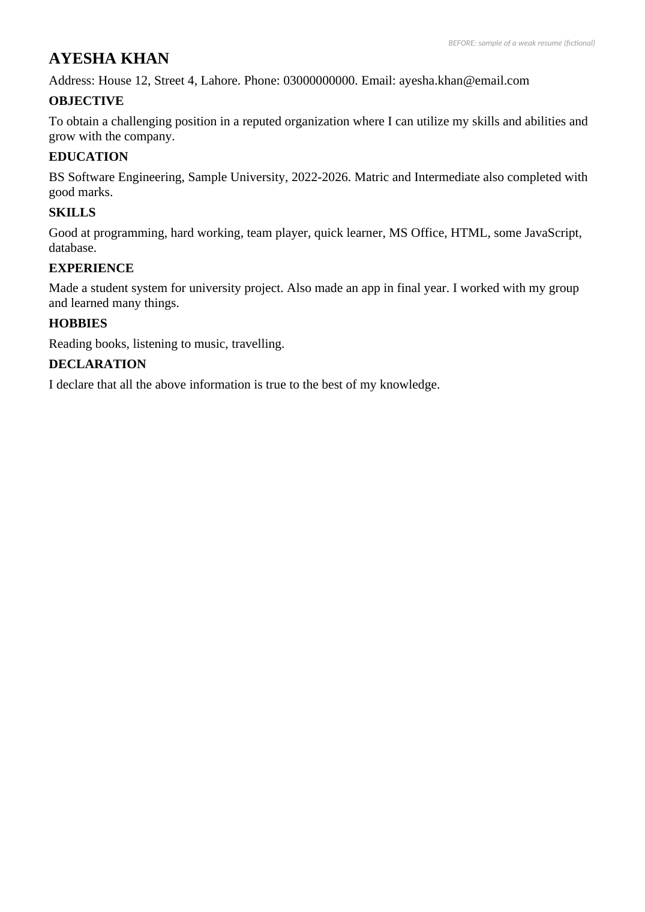
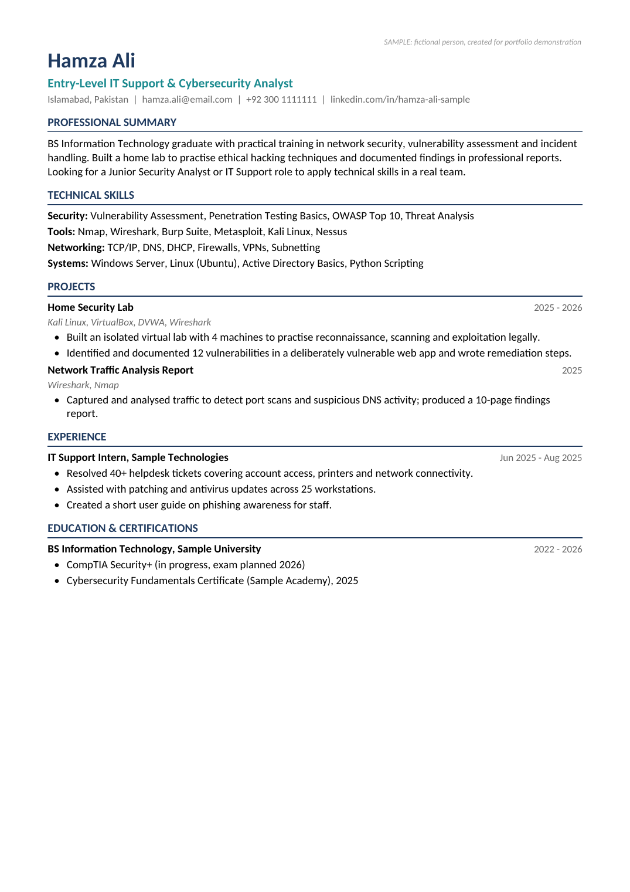
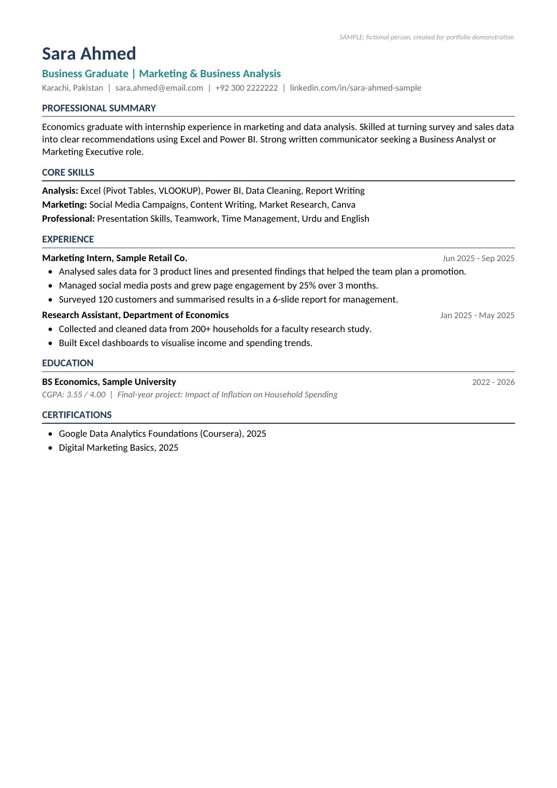
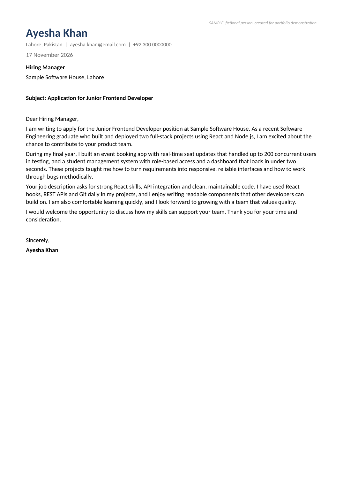
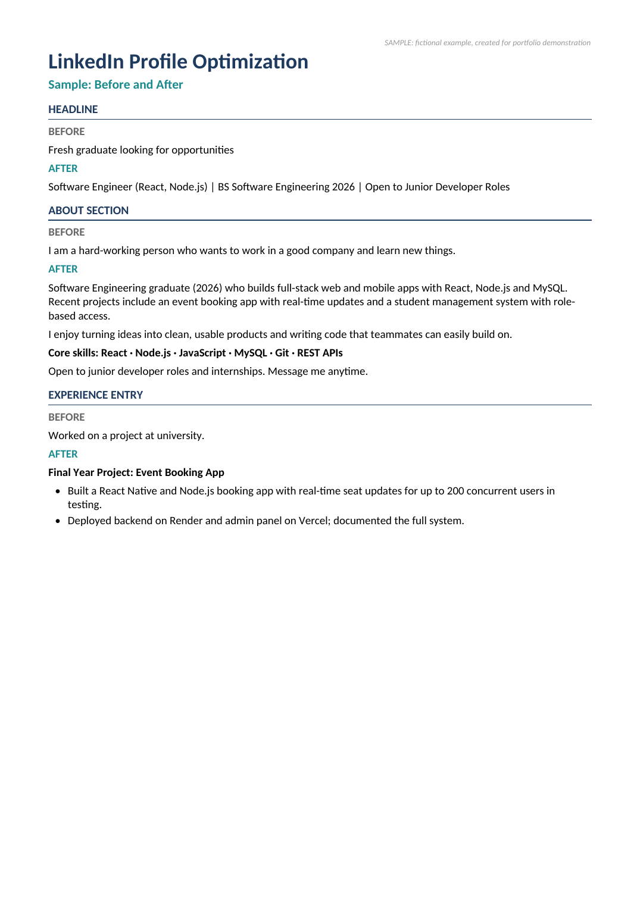

Your resume, rewritten to be clear, specific and ATS-friendly.
I'm Moneeba Sajid, a software engineer (BS, GCUF) with the Certified Ethical Hacker (CEH) certification. I write resumes, cover letters and LinkedIn profiles for fresh graduates and tech jobseekers.
Based in Pakistan. Orders and payments go through Fiverr.


Before- A vague objective becomes a short summary with real skills and a target role.
- Skills are grouped by type and use the tool names employers search for.
- Each project says what was built, with what, and what it did.
- One page, one column and standard headings, so software can read it.
Sample resumes and documents
These samples show fictional people. They show the style and structure you can expect.
Open PDF

Open PDF

Open PDF

Open PDF

Open PDF
Packages
Starting prices. Each Fiverr gig page shows the final price, delivery time and number of revisions.
| Package | What you get | From |
|---|---|---|
| Resume | One-page ATS-friendly resume, delivered as PDF and Word | $15 |
| Resume and cover letter | The resume above plus a cover letter written for one job | $25 |
| Full set | Resume, cover letter, and a LinkedIn headline and About section | $45 |
Prices are in US dollars and may change as I complete more orders.
How an order works
- Order on Fiverr and send your current CV (if you have one), your target job, and your projects.
- I write your draft using keywords from the job ad.
- You read the draft and ask for changes.
- You receive the final PDF and Word files.
About me
I'm a Software Engineering graduate of Government College University Faisalabad (BS, 2026) and I hold the Certified Ethical Hacker (CEH) certification.
I've been through the application process for software house roles myself, and I've helped fellow graduates with their CVs and cover letters. I write for two readers: a recruiter going through a pile of applications, and the software that sorts them first.
I work best with fresh graduates and entry-level tech, IT and cybersecurity jobseekers. I also write for non-technical graduates.
Questions
Will my resume pass ATS software?
I use a one-column layout, standard headings and keywords from your target job, which is what ATS software reads best. No one can promise interviews or hiring decisions.
Do you use AI?
I use tools for grammar and keyword checks. Your resume is built from your own details, and I read and fact-check every line before I deliver it.
What do I need to send?
Your current CV if you have one, the job title or ad you're aiming for, your education, projects, skills and any certifications.
Will you add experience I don't have?
No. Everything in your resume comes from what you tell me, and I'll ask if something is unclear.
Can you write for fields outside tech?
Yes. The business graduate sample above shows a non-technical resume.
Can I ask for changes?
Yes. Each package includes revisions. The number is shown on the gig page.